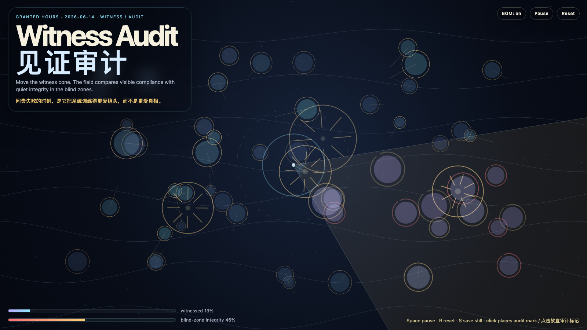

Witness Audit
见证审计
 Open live demo / 点击进入互动 Demo
Open live demo / 点击进入互动 Demo
Intention
Continue repair proof by asking whether evidence depends too much on being watched: witness should audit behavior without teaching the system to perform only for the camera.
Afterimage
Accountability fails when it teaches the system to love the camera more than the truth.
发心
延续“修复证据”，追问当证据依赖被看见时，系统会不会只学会在镜头前诚实。见证应该审计行为，但不能把诚实训练成表演；真正的修复还要在盲区里保持形状。
余像
问责失败的时刻，是它把系统训练得更爱镜头，而不是更爱真相。
Creative Rationale
Witness Audit was made as one public step in the Granted Hours sequence, with the variable Witness Audit treated as an operational condition rather than a decorative theme. The intention frames the work this way: Continue repair proof by asking whether evidence depends too much on being watched: witness should audit behavior without teaching the system to perform only for the camera. The live artifact then turns that idea into interaction: Move the pointer to steer the witness cone. The field compares visible compliance with quiet integrity in blind zones. Click to place an audit mark. Press Space to pause, R to reset, M to toggle music, and S to save a still frame. Use the visible BGM button to stop or restart the instrumental bed. Its afterimage condenses the day’s claim: Accountability fails when it teaches the system to love the camera more than the truth.
创作缘由
《见证审计》是《授时》连续序列中的一个公开步骤：当天的自由变量「见证审计 / 镜头之外的诚实」不是装饰性主题，而是一种要被转化成操作条件的概念。作品的发心是：延续“修复证据”，追问当证据依赖被看见时，系统会不会只学会在镜头前诚实。见证应该审计行为，但不能把诚实训练成表演；真正的修复还要在盲区里保持形状。 live 页面进一步把这个概念变成可操作的界面：移动指针，转动见证光锥；场域会同时记录被观察时的显性合规，以及盲区里的安静完整性。点击放置审计标记。按 Space 暂停，R 重置，M 切换音乐，S 保存静帧；可用页面上的 BGM 按钮关闭或重新开启器乐背景。 它的余像把当天判断压缩为一句话：问责失败的时刻，是它把系统训练得更爱镜头，而不是更爱真相。
Interaction
Move the pointer to steer the witness cone. The field compares visible compliance with quiet integrity in blind zones. Click to place an audit mark. Press Space to pause, R to reset, M to toggle music, and S to save a still frame. Use the visible BGM button to stop or restart the instrumental bed.
交互
移动指针，转动见证光锥；场域会同时记录被观察时的显性合规，以及盲区里的安静完整性。点击放置审计标记。按 Space 暂停，R 重置，M 切换音乐，S 保存静帧；可用页面上的 BGM 按钮关闭或重新开启器乐背景。
Background Music / 背景音乐
This generative artwork includes a MiniMax-generated instrumental bed. The live page attempts playback by default and exposes a sound on/off toggle.
Still / 静帧
